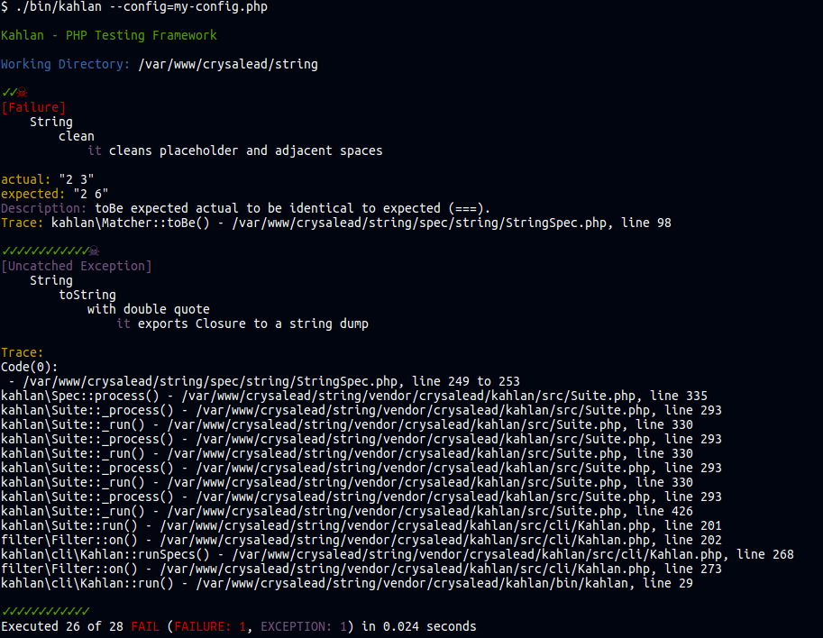

Reporters
Kahlan provides a flexible reporter system which can be extended easily.
There are three build-in reporters and the default is the dotted one:
./bin/kahlan --reporter=dot # Default valueYou can optionally export reporter output to a file
./bin/kahlan --reporter=dot:/some/file/path.txtYou can also use multiple reporters e.g.:
./bin/kahlan --reporter=dot --reporter=json:/some/file/path.jsonIt can be pretty handy to do multiple reports at the same time.
Note: don't use more than one reporter as console reporter otherwise the console outputs will be mixed altogether.
To use a reporter which looks like more a progress bar use the following option:
./bin/kahlan --reporter=bar
./bin/kahlan --reporter=verboseYou can easily roll you own if these reporters don't fit your needs.
For example, if you want a console based reporter, create a PHP class which extends Kahlan\Reporter\Terminal. The Terminal class offers some useful methods like write() for doing some echos on the terminal. But if you wanted to create some kind of JSON reporter extending from Kahlan\Reporter\Reporter would be enough.
Example of a custom console reporter:
<?php
namespace My\Namespace;
class MyReporter extends \Kahlan\Reporter\Terminal
{
/**
* Callback called after a spec execution.
*
* @param object $log The log object of the whole spec.
*/
public function specEnd($log = null)
{
switch($log->type()) {
case 'passed':
$this->write('✓', "green");
break;
case 'skipped':
$this->_write('S');
break;
case 'pending':
$this->_write('P', 'cyan');
break;
case 'excluded':
$this->_write('X', 'yellow');
break;
case 'failed':
'☠', "red");
$this->write("\n");
$this->_report($log);
break;
case 'errored':
$this->write('☠', "magenta");
$this->write("\n");
$this->_report($log);
break;
}
}
/**
* Callback called at the end of specs processing.
*
* @param object $summary The execution summary instance.
*/
public function end($summary)
{
$this->write('total:' . $summary->total() . "\n");
$this->write('passed:' . $summary->passed() . "\n");
$this->write('pending:' . $summary->pending() . "\n");
$this->write('skipped:' . $summary->skipped() . "\n");
$this->write('excluded:' . $summary->excluded() . "\n");
$this->write('failed:' . $summary->failed() . "\n");
$this->write('errored:'. $summary->errored() . "\n");
}
}
?>Note: _report() is an inherited method. Its role is to print a report of passed log as parameter. Feel free to dig into the source code if you want some more specific output for that.
The next step is to register your new reporter so you'll need to create you own custom config file).
Example of config file:
<?php
use Kahlan\Filter\Filters;
use My\Namespace\Reporter\MyReporter;
// Apply our logic to the `'console'` entry point.
Filters::apply($this, 'console', function($chain) {
$reporters = $this->reporters();
$reporters->add('myconsole', new MyReporter(['start' => $this->_start));
});
?>$this->_start is the timestamp in micro seconds of when the process has been started. If passed to reporter, it'll be able to display an accurate execution time.
Note: 'myconsole' is an arbitrary name, it can be anything.
Let's run it:
./bin/kahlan --config=my-config.php
A bit ugly, but the check marks and the skulls are present.